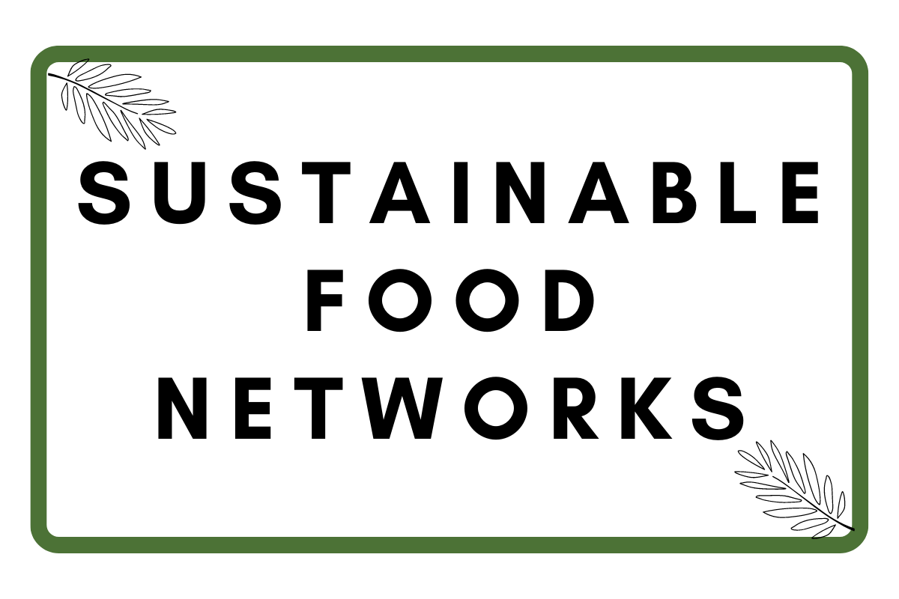
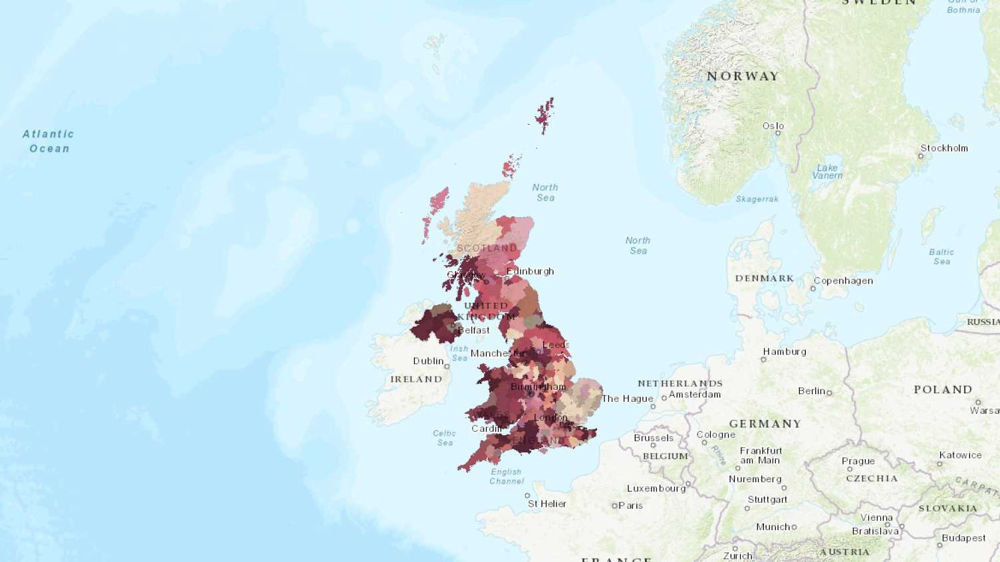
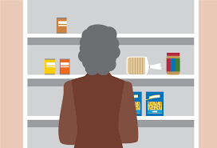

<!DOCTYPE html></html>
<html lang="en-UK">
    <head>
        <meta charset="utf-8" />
        <meta name="viewport" content="width=device-width, initial-scale=1.0">
        <title>Sustainable Food Blog</title>
        <link href="../styles/design-guide.css" rel="stylesheet" type="text/css" />
        <link href="https://fonts.googleapis.com/css2?family=Roboto:wght@100&display=swap" rel="stylesheet">
    </head>
</html>

<body class="blog-content-page">

    <header class="blog-logo-content-page">
        
    </header>
    <section class="nav-bar-content-page">
        <button class="nav-bar-button"><h2>Home</h2></button>
        <button class="nav-bar-button"><h2>About</h2></button>
        <button class="nav-bar-button"><h2>Participate</h2></button>
        <button class="nav-bar-button"><h2>Index</h2></button>
        <button class="nav-bar-button"><h2>Newsletter</h2></button>
        <button class="nav-bar-button"><h2>Contact Us</h2></button>
    </section>
    <section class="blog-content-title">
        <h1><u>Moving Beyond Food Banks</u></h1>
        <h4>Inflation is at its highest level in four decades and an increasing number of British households are struggling to access basics including food. Dr Megan Blake is redefining food support in the UK by addressing the wider effects that food insecurity has on health, wellbeing, and communities. </h4>
        <h5> 20th Febuary 2023</h5>
    </section>
    <section class="author-info">
        
        <h3 class="author-name">Dr Megan Blake</h3>
        <h4 class="author-job">Senior Lecturer of Geography at the The University of Sheffield</h4>
        <p class="author-blurb">Megan is a recognised expert in food security and food justice. Her current research focuses on everyday food insecurity can be addressed in developed economies. </p>
    </section>
    <section class="main-blog-content">
        <figure><figcaption class="figcaption">A map showing the extent of food insecurity in adults in the UK (2021).</figcaption></figure>
        <p class="first-text-content">The United Nations defines food security as the ability for people to have physical and financial access to sufficient and nutritious food at all times. Socially just food security is one where this happens in the place where they live, does not impose premiums on the most vulnerable, and is culturally appropriate. Yet despite the UK being one of the wealthiest countries in the world, millions of people are experiencing food insecurity. </p>
        <blockquote cite="https://foodfoundation.org.uk/who-we-are#vision" ><em><b>Data released by the Food Foundation shows that 4.7 million adults in the UK were food insecure in April 2022.</b></em></blockquote>
        
         <p class="snd-text-content">One million adults reported that they, or someone in their household, had to go a day without eating due to being unable to afford or access food. The start of the pandemic saw a 57 per cent jump in the proportion of households cutting back on food or missing meals in just three months.
         But even after the peak of the pandemic, families across the UK continue to face increasing pressure on their disposable income. Rising energy bills, inflation and petrol prices, as well as the cost of food have pushed more households towards food insecurity. Food banks have reported that the combined pressures of the cost of living crisis have resulted in greater demand for food products that do not need to be prepared as families seek to reduce their energy consumption to lower bills. During the pandemic, the Government responded with emergency support such as the furlough scheme, food parcels and vouchers, an uplift in universal credit and free school meals. Much of this support has subsequently been withdrawn and there are limited resources available to prevent food insecurity from happening in the first place. A system that only provides temporary support for those in immediate need, and does nothing to help people out of food insecurity, or prevent them from becoming food insecure in the first place, is fundamentally flawed.
        </p>
    </section>
    <section class="home-button">
        <a href="../project-one.html" class="home-button"></a>
    </section>
    <footer class="footer">
        <a class="instagram" href="https://www.instagram.com/"></a><h4 class="tags" id="tag-1">@sustainablefoodblog</h4> 
        <a class="twitter" href="https://www.twitter.com/" ></a><h4 class="tags" id="tag-2" >@sustainablefoodblog</h4>
        <a class="youtube" href="https://www.youtube.com/" ></a><h4 class="tags" id="tag-3" >@sustainablefoodblog</h4>
        <div class="subscribe">
            <label for="email">Subscribe:</label>
            <input type="email" id="email" name="email">
            <input type="submit" id="submit" value="Submit">
        </div>
    </footer>


</body>